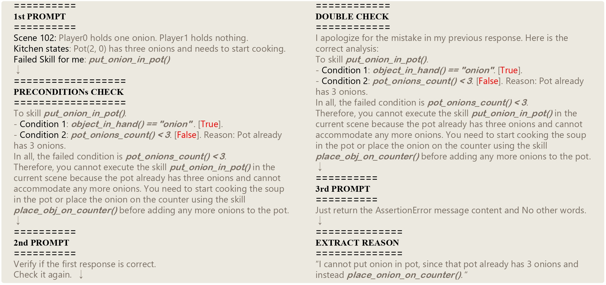

ProAgent framework including the coordination task workflow (left) and inner details of ProAgent pipeline (right)..

Building AIs with adaptive behaviors in human-AI cooperation stands as a pivotal focus in AGI research. Current methods for developing cooperative agents predominantly rely on learning-based methods, where policy generalization heavily hinges on past interactions with specific teammates. These approaches constrain the agent's capacity to recalibrate its strategy when confronted with novel teammates. We propose \textbf{ProAgent}, a novel framework that harnesses large language models (LLMs) to fashion a \textit{pro}active \textit{agent} empowered with the ability to anticipate teammates' forthcoming decisions and formulate enhanced plans for itself. ProAgent excels at cooperative reasoning with the capacity to dynamically adapt its behavior to enhance collaborative efforts with teammates. Moreover, the ProAgent framework exhibits a high degree of modularity and interpretability, facilitating seamless integration to address a wide array of coordination scenarios. Experimental evaluations conducted within the framework of \textit{Overcook-AI} unveil the remarkable performance superiority of ProAgent, attaining an average improvement of over 10\% compared to the existing state-of-the-art methods.The advancement was consistently observed across diverse scenarios involving interactions with both AI agents of varying characteristics and human counterparts.
@article{zhang2023proagent,
title={ProAgent: Building Proactive Cooperative AI with Large Language Models},
author={Ceyao Zhang and Kaijie Yang and Siyi Hu and Zihao Wang and Guanghe Li and Yihang Sun and Cheng Zhang and Zhaowei Zhang and Anji Liu and Song-Chun Zhu and Xiaojun Chang and Junge Zhang and Feng Yin and Yitao Liang and Yaodong Yang},
year={2023},
eprint={2308.11339},
archivePrefix={arXiv},
primaryClass={cs.AI}
}